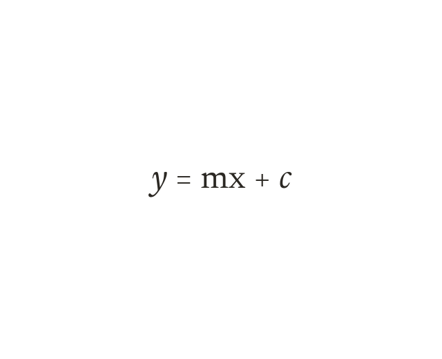

Why the form matters
Read m and c only from the form y = mx + c. Rearrange any linear equation with inverse operations on both sides.
The gradient and intercept can only be read off directly once an equation is written in the form y = mx + c - reading them from any other arrangement risks reading the wrong numbers. Any linear equation can be rearranged into that form using the same inverse operations used to solve an equation: adding, subtracting, multiplying or dividing both sides by the same thing.